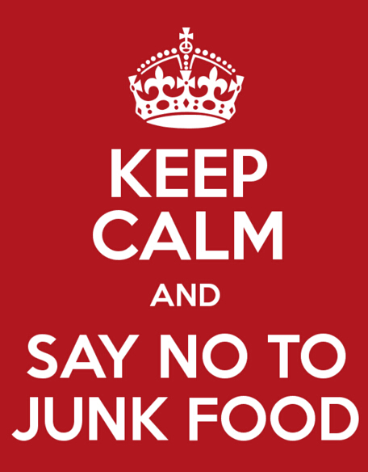

Ways To Eat Healthily
Eating healthily means getting rid of fried foods ( Burgers, Fries, The foods that you eat at fast food restaurants) , sodas, desserts, processed foods ( Packaged foods are foods that when you read the ingredients list you have no idea what the ingredients listed are ) I know it's hard and may seem impossible but try your best to achieve these goals. Improving little by little works too! All the pain you go through now is the rest your body needs. It makes your body really happy. Your body needs as less junk food as possible to keep you healthy. Try your best to keep your body happy and one day your body will pay back to you by giving you the most healthy body you can have!
